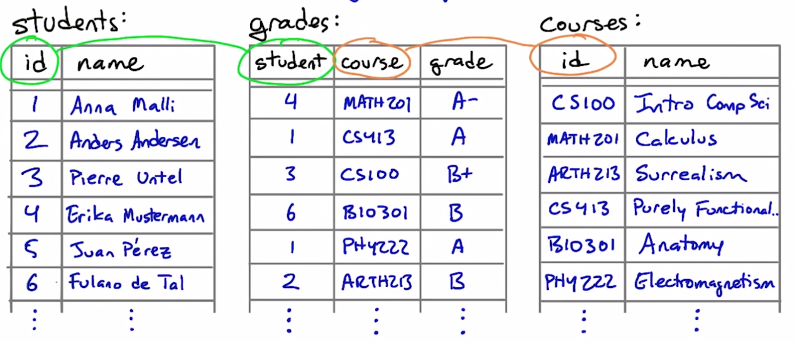
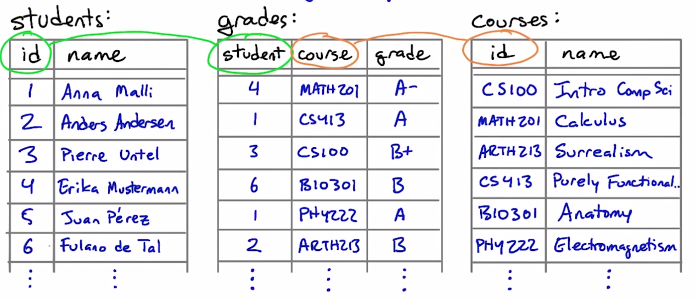Check out William Kent's paper "A Simple Guide to Five Normal Forms in Relational Database Theory" for a lot more about normalization and how it can help your database design.
In a normalized database, the relationships among the tables match the relationships that are really there among the data.
every row has the same number of columns 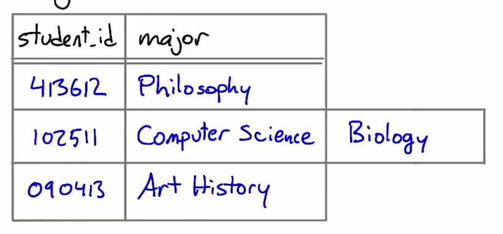 (well, i guess the current DBMS doesn't let you do this anyways)
there is a unique key, and everything in a row says something about the key 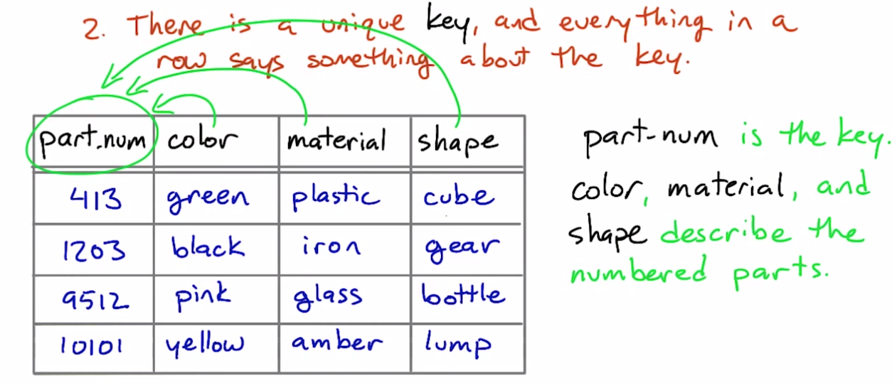 the rest of row contains data related of the key
stuff that don't relate to the key should go to different tables
before:
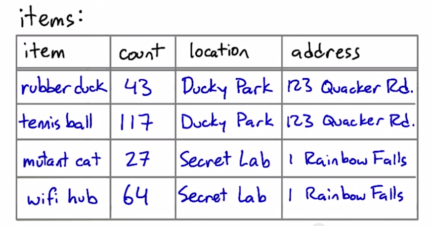
item: unique key
count: item's count [related:YES]
location: item's location [related:YES]
address: location's address [related:NO]
after: 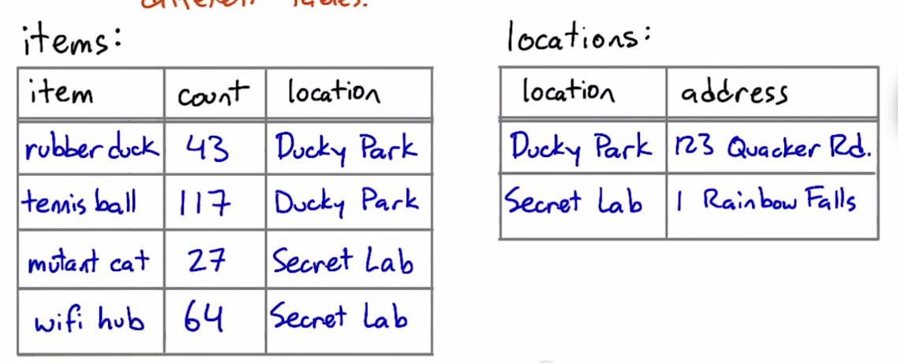
tables shouldn't imply relationships that don't exist
before:
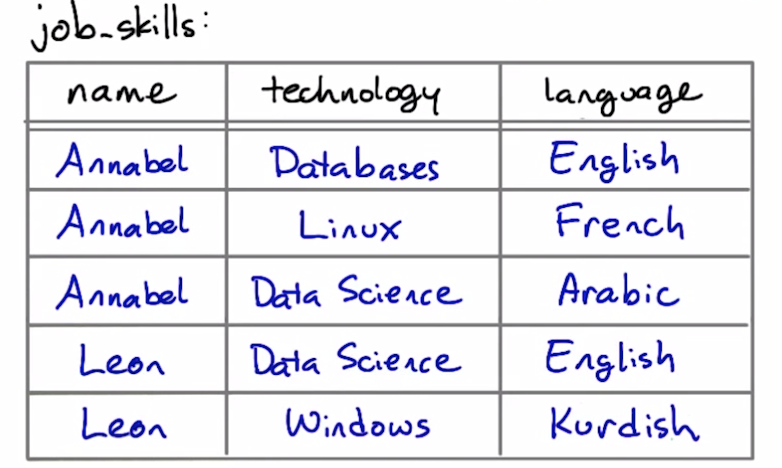
technology and langauge are independent and has no relationship, so they shouldn't be in the same table.
after:
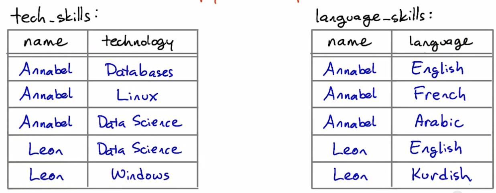
You will sometimes hear about denormalization as an approach to making database queries faster by avoiding joins. This is an advanced topic beyond the scope of this course. But if you're interested in it, on modern database systems (such as PostgreSQL) it is often possible to meet the same goals using tools such as indexes and materialized views.
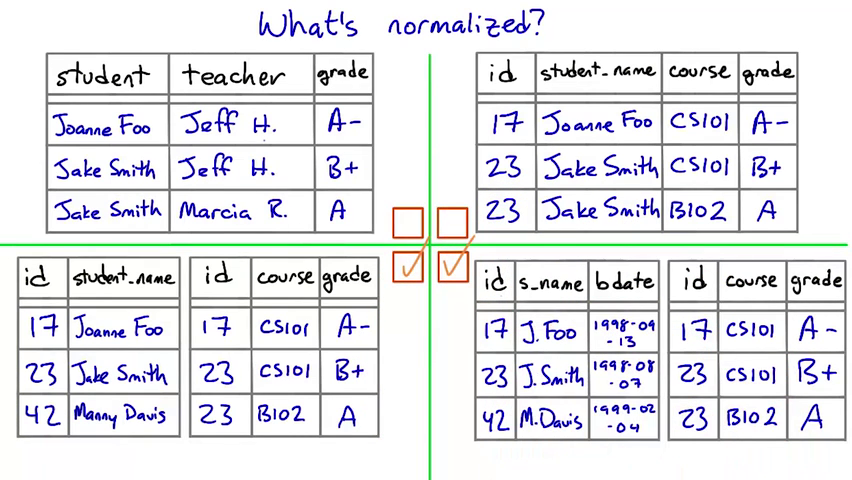
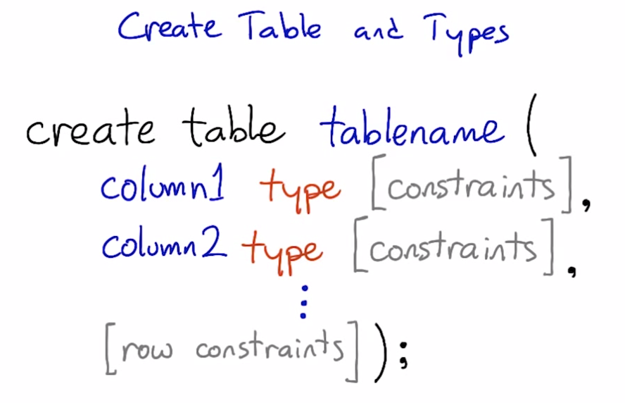
vagrant@vagrant:~$ psql
psql (9.3.6)
Type "help" for help.
vagrant=> create database fishies;
CREATE DATABASE
vagrant=> \c fishies
You are now connected to database "fishies" as user "vagrant".
fishies=> create table sashimi (id serial, name text);
CREATE TABLE
fishies=> select * from sashimi;
id | name
----+------
(0 rows)
fishies=> insert into sashimi (name) values ('tuna');
INSERT 0 1
fishies=> select * from sashimi;
id | name
----+------
1 | tuna
(1 row)
fishies=>
For more detail on the serial type, take a look at the last section of this page in the PostgreSQL manual:
http://www.postgresql.org/docs/9.4/static/datatype-numeric.html
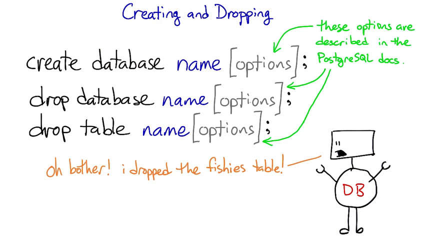 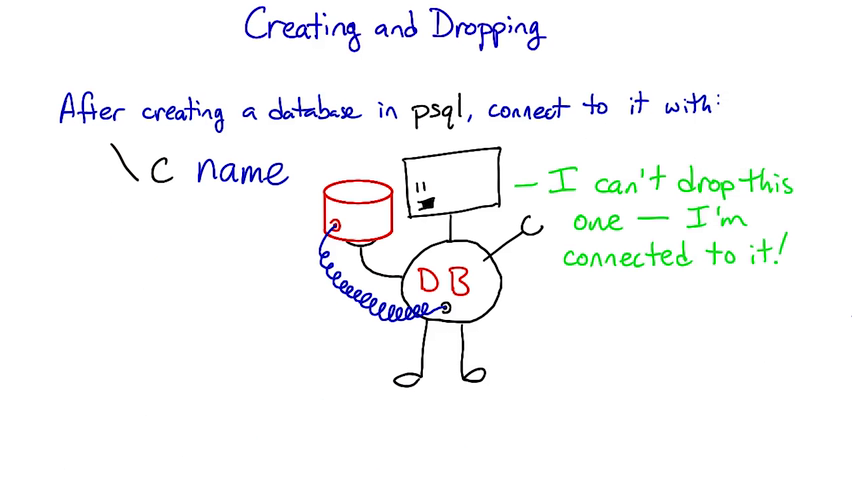
a column or columns that uniquely identify what each row in a table is about
single-column primary key:
create table students(
id serial primary key,
name text,
birthday date
);
multi-column primary key:
create table postal_pages (
postal_code text,
country text,
name text,
primary key (postal_code, country)
);
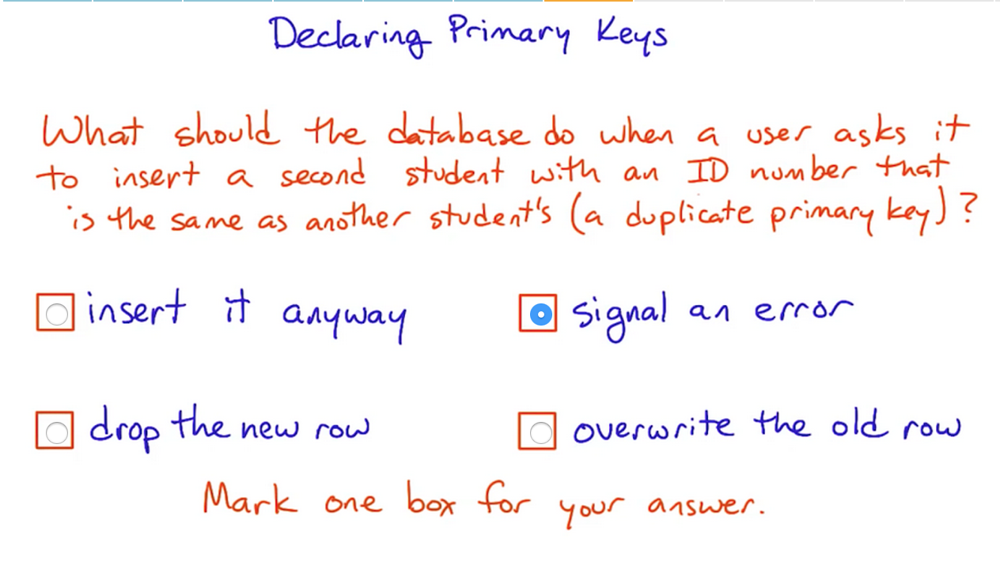 If we set up a constraint (such as a primary key) we're asking for the database to help ensure that our data makes sense.
By signaling an error, the database refuses to accept data that break the "rule" that we've created by adding a primary key constraint.
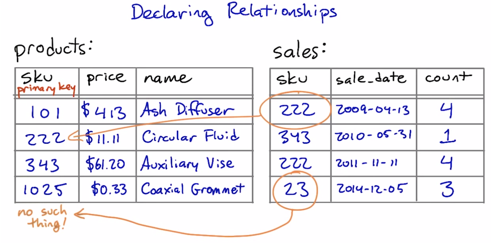
create table sales (
sku text references products (sku),
sale_date date,
count integer
)
references provides referential integrity - columns that are supposed to refer to each other are guaranteed to do so
A foreign key is a column or set of columns in one table, that uniquely identifies rows in another table
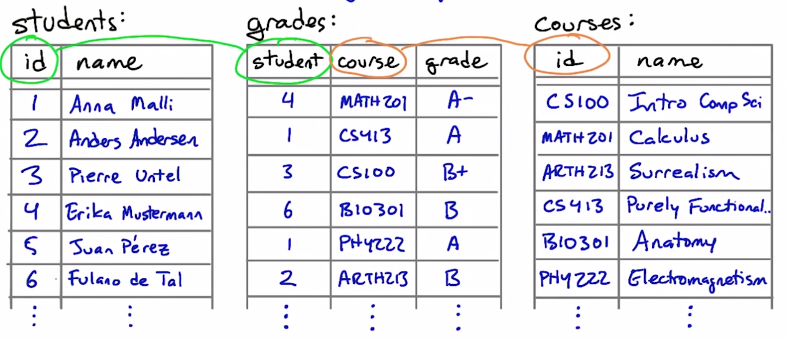
list of residents table:
select id, building, room from residences;
+--------+----------+------+
| id | building | room |
+========+==========+======+
| 104131 | Dolliver | 14 |
| 105540 | Kendrick | 3B |
| 118199 | Kendrick | 1A |
| 161282 | Dolliver | 7 |
| 170267 | Dolliver | 1 |
| 231742 | Kendrick | 3B |
| 250841 | Kendrick | 2B |
| 410315 | Crosby | 20 |
| 413001 | Crosby | 10 |
| 427611 | Dolliver | 10 |
| 477801 | Dolliver | 8 |
| 496747 | Crosby | 19 |
| 498446 | Crosby | 21 |
| 505241 | Dolliver | 8 |
| 612413 | Crosby | 31 |
| 707536 | Dolliver | 14 |
| 741532 | Crosby | 19 |
| 762907 | Dolliver | 9 |
| 824292 | Kendrick | 1A |
| 851866 | Crosby | 22 |
| 881256 | Crosby | 10 |
| 931027 | Crosby | 31 |
| 958827 | Dolliver | 1 |
+--------+----------+------+
find pairs of roommates:
select
a.id, b.id, a.building, a.room
from
residences as a, residences as b
where
a.building = b.building
and
a.room = b.room
and
a.id < b.id
order by
a.building, a.room;
+--------+--------+----------+------+
| id | id | building | room |
+========+========+==========+======+
| 881256 | 413001 | Crosby | 10 |
| 741532 | 496747 | Crosby | 19 |
| 931027 | 612413 | Crosby | 31 |
| 958827 | 170267 | Dolliver | 1 |
| 707536 | 104131 | Dolliver | 14 |
| 505241 | 477801 | Dolliver | 8 |
| 824292 | 118199 | Kendrick | 1A |
| 231742 | 105540 | Kendrick | 3B |
+--------+--------+----------+------+
Counting rows in a single table is something you’ve seen many times before in this course. A column aggregated with the count aggregation function will return the number of rows in the table, or the number of rows for each value of a group by clause.
For instance, you saw queries like these back in Lesson 2:
select count(*) from animals;
-- returns the number of animals in the zoo
select count(*) from animals where species = ‘gorilla’;
-- returns the number of gorillas
select species, count(*) from animals group by species;
-- returns each species’ name and the number of animals of that species
Things get a little more complicated if you want to count the results of a join. Consider these tables we saw earlier in Lesson 4, the products and sales tables for a store:
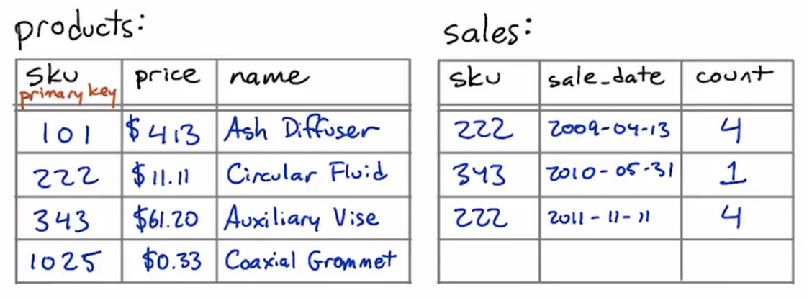
Suppose that we want to know how many times we have sold each product. In other words, for each sku value in the products table, we want to know the number of times it occurs in the sales table. We might start out with a query like this:
select products.name, products.sku, count(*) as num
from products join sales
on products.sku = sales.sku
group by products.sku;
But this query might not do exactly what we want. If a particular sku has never been sold — if there are no entries for it in the sales table — then this query will not return a row for it at all.
If we wanted to see a row with the number zero in it, we’ll be disappointed!
However, there is a way to get the database to give us a count with a zero in it. To do this, we’ll need to change two things about this query —
select products.name, products.sku, count(sales.sku) as num
from products left join sales
on products.sku = sales.sku
group by products.sku;
This query will give us a row for every product in the products table, even the ones that have no sales in the sales table.
What’s changed? First, we’re using count(sales.sku) instead of count(*). This means that the database will count only rows where sales.sku is defined, instead of all rows.
Second, we’re using a left join instead of a plain join.
SQL supports a number of variations on the theme of joins. The kind of join that you have seen earlier in this course is called an inner join, and it is the most common kind of join — so common that SQL doesn’t actually make us say "inner join" to do one.
But the second most common is the left join, and its mirror-image partner, the right join. The words “left” and “right” refer to the tables to the left and right of the join operator. (Above, the left table is products and the right table is sales.)
A regular (inner) join returns only those rows where the two tables have entries matching the join condition. A left join returns all those rows, plus the rows where the left table has an entry but the right table doesn’t. And a right join does the same but for the right table.
(Just as “join” is short for “inner join”, so too is “left join” actually short for “left outer join”. But SQL lets us just say “left join”, which is a lot less typing. So we’ll do that.)
# In this quiz, there's a table describing bugs in various files of code.
# Here's what the table looks like:
#
# create table programs (
# name text,
# filename text
# );
# create table bugs (
# filename text,
# description text,
# id serial primary key
# );
#
# The query below is intended to count the number of bugs in each program. But
# it doesn't return a row for any program that has zero bugs. Try running it as
# it is; then change it so that it includes rows for the programs with no bugs.
QUERY = '''
select programs.name, count(bugs.id) as num
from programs left join bugs
on programs.filename = bugs.filename
group by programs.name
order by num;
'''
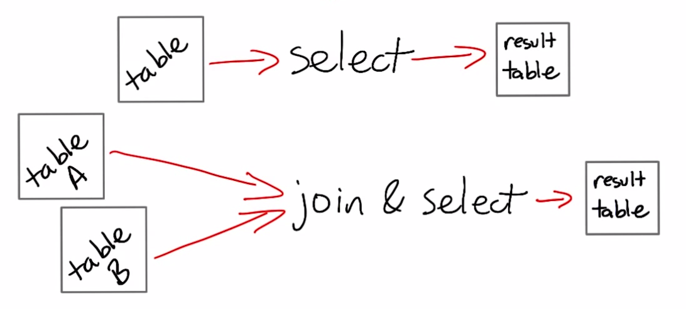 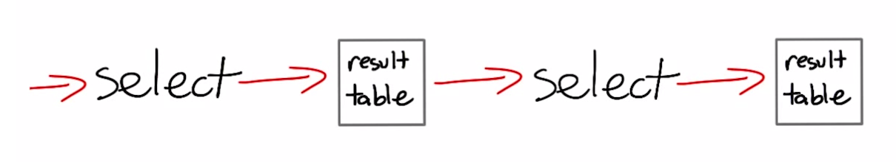 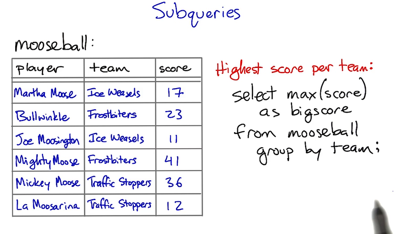 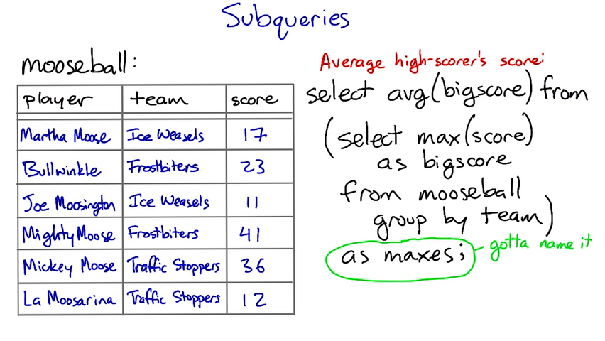
# Find the players whose weight is less than the average.
#
# The function below performs two database queries in order to find the right players.
# Refactor this code so that it performs only one query.
#
def lightweights(cursor):
"""Returns a list of the players in the db whose weight is less than the average."""
#cursor.execute("select avg(weight) as av from players;")
#av = cursor.fetchall()[0][0] # first column of first (and only) row
cursor.execute("select name, weight from players, (select avg(weight) as av from players) as p_weight where weight < p_weight.av")
return cursor.fetchall()
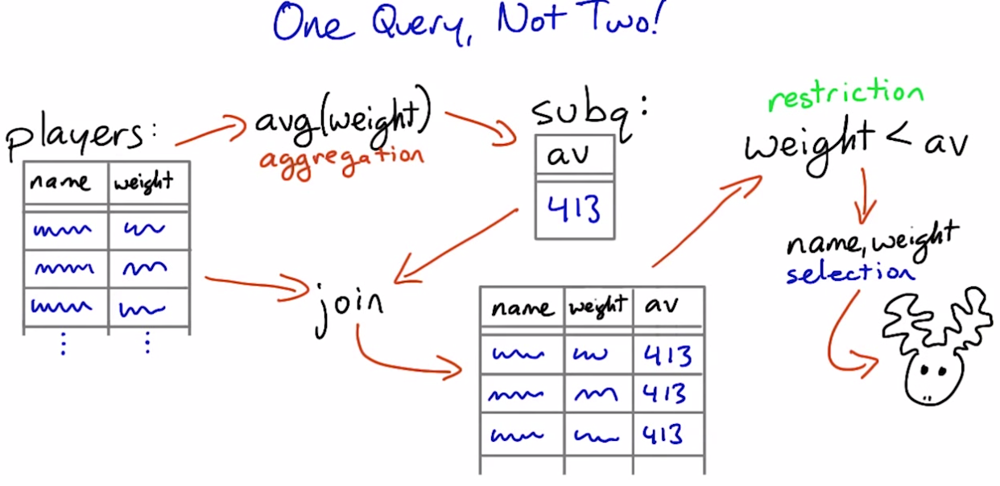
A view is a select query stored in the database in a way that lets you use it like a table
create view viewname as select...
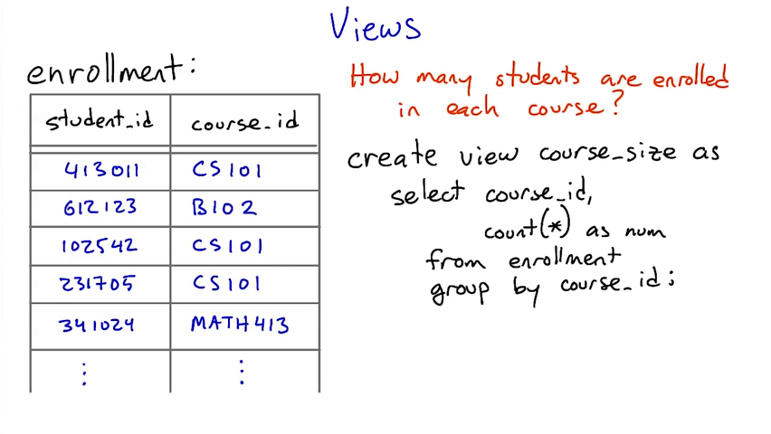 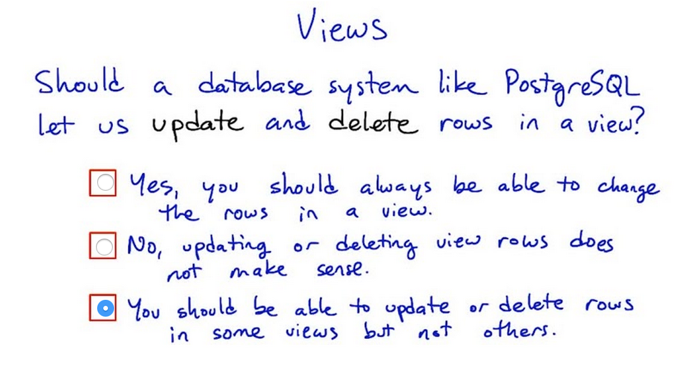